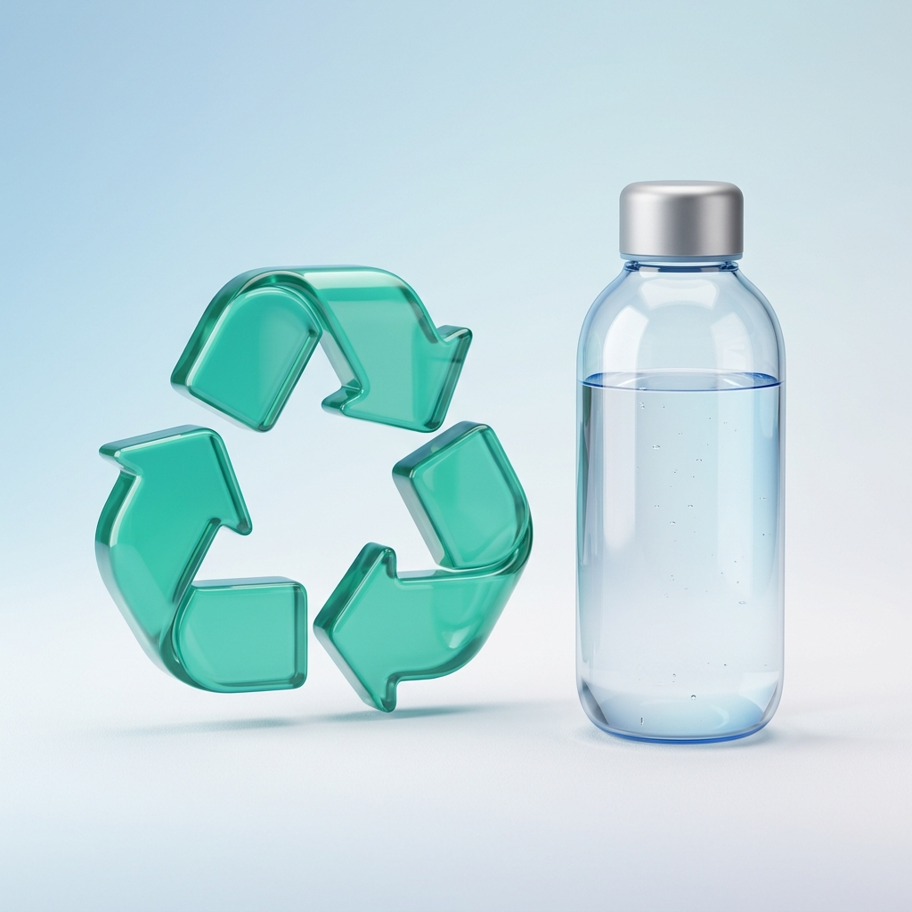
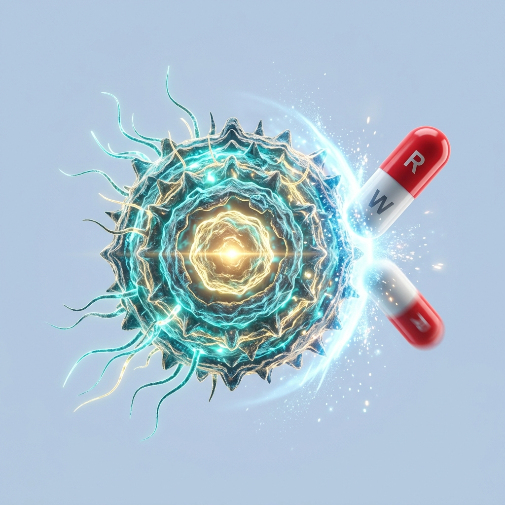
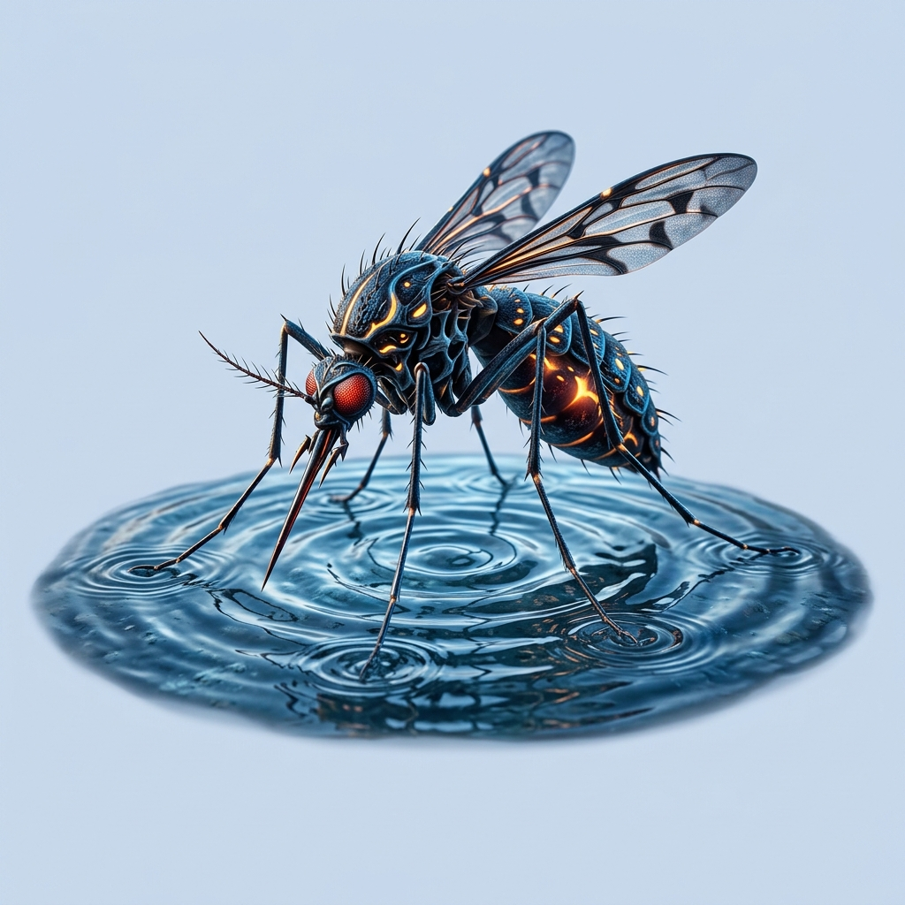
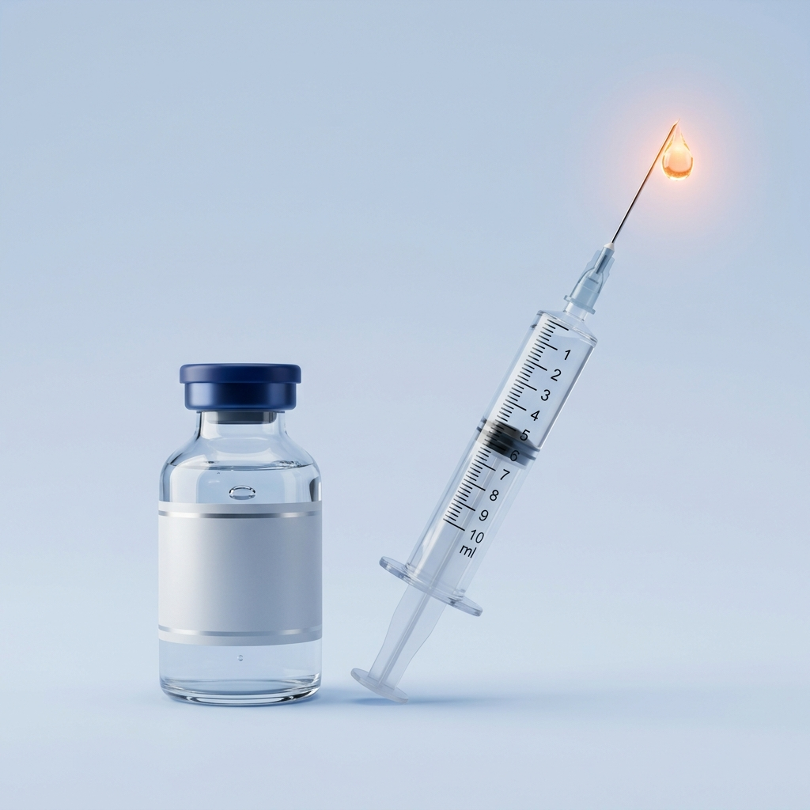
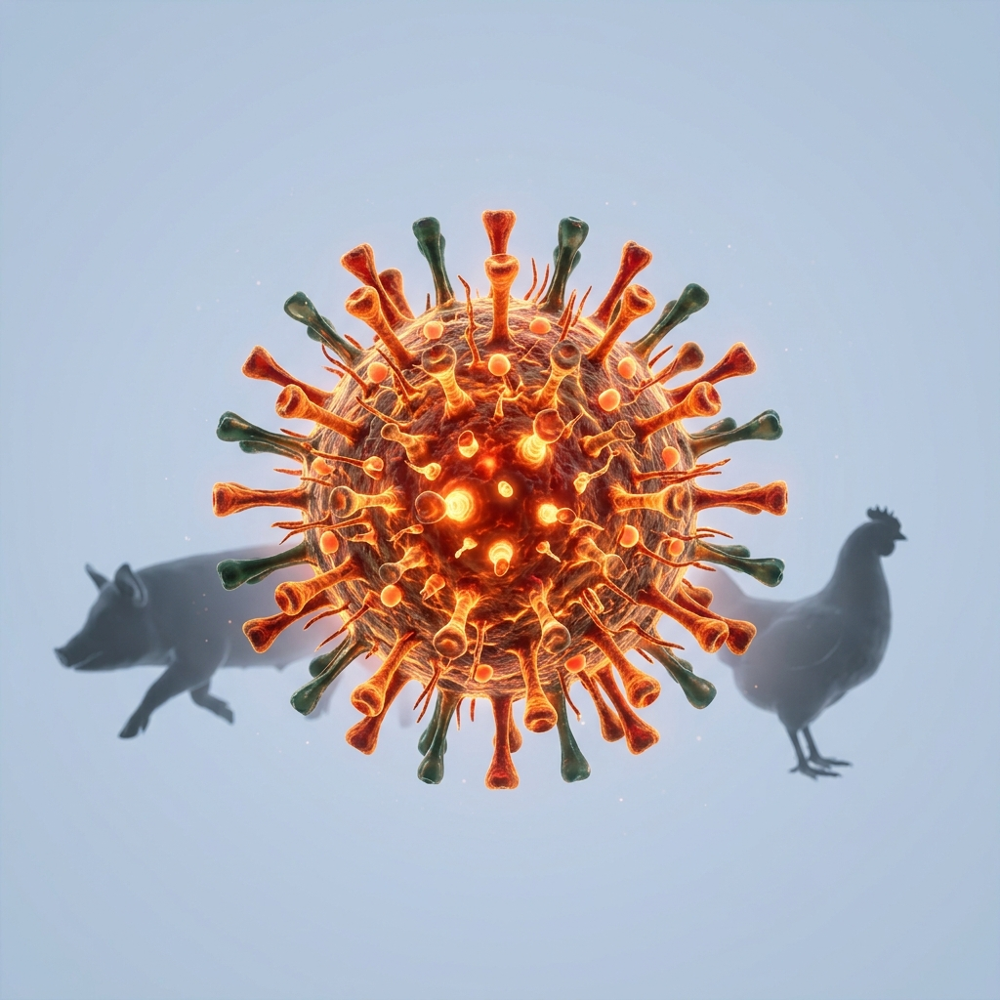

The Awareness Hub
Knowledge is power. Browse our curated library of 24 community education topics to learn how you can make a meaningful impact in your daily life.
Blood Donation
Every donation saves up to three lives. Learn why regular blood donation is critical for our community.
Basic First Aid
Essential life-saving techniques everyone should know — from CPR to wound care.
Mental Health
Breaking stigmas and building resilience through open, compassionate conversations.
Environmental Protection
Protecting forests, water bodies, and biodiversity in the Barak Valley for future generations.
 Environment
Environment
Sustainable Living
Small daily changes that create lasting environmental impact for our communities.

Women's Safety
Empowering women through awareness of legal rights, self-defense, and community support systems.

Child Protection
Safeguarding children from abuse, exploitation, and neglect in our communities.
 Digital
Digital
Cyber Security
Staying safe online — protecting yourself from scams, phishing, and digital fraud.
Road Safety
Preventing accidents through awareness of traffic rules, helmet use, and pedestrian safety.
 Health
Health
Food Safety
Understanding food hygiene, contamination risks, and safe storage practices for healthier lives.
 Disaster Relief
Disaster Relief
Disaster Management
Flood preparedness, emergency kits, and evacuation planning for the Barak Valley.
AI & Technology
Understanding artificial intelligence, its benefits, risks, and impact on modern society.

EnvironmentPlastic Pollution
The devastating impact of single-use plastics on our rivers, soil, and wildlife.
 Environment
Environment
Water Conservation
Protecting our most precious resource through household and community-level conservation.
Health
Water Contamination
Understanding waterborne diseases, contamination sources, and purification methods.

HealthAntimicrobial Resistance
The silent pandemic of drug-resistant superbugs threatening modern medicine.
 Health
Health
Scrub Typhus
A deadly mite-borne disease prevalent in our region — symptoms, prevention, and treatment.
 Health
Health
Stunting & Parasites
How intestinal parasites cause childhood malnutrition and stunted growth in rural India.

HealthVector-Borne Diseases
Dengue, malaria, and Japanese encephalitis — prevention starts with mosquito control.

HealthZero Dose Children
Millions of children miss life-saving vaccines. Understanding the zero-dose crisis.
 Environment
Environment
Waste Dumping
The environmental and health consequences of unregulated waste disposal in our region.
 Environment
Environment
Water Purification
Affordable, effective water purification methods for households without access to clean water.

Youth Mental Health
Addressing the mental health crisis among students — exam stress, social media, and isolation.

HealthZoonotic Diseases
How diseases jump from animals to humans — and why prevention matters more than ever.